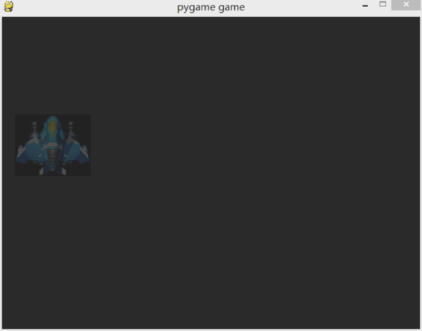
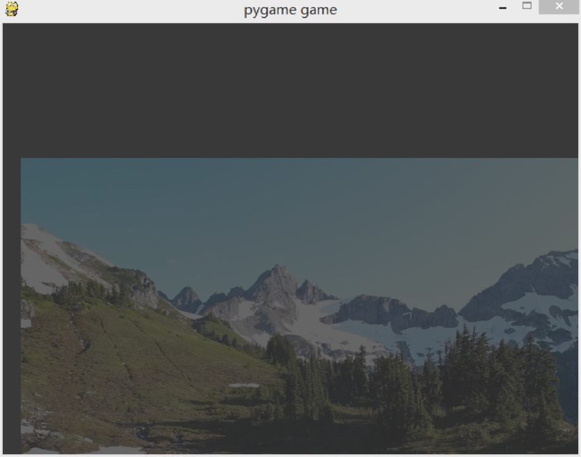
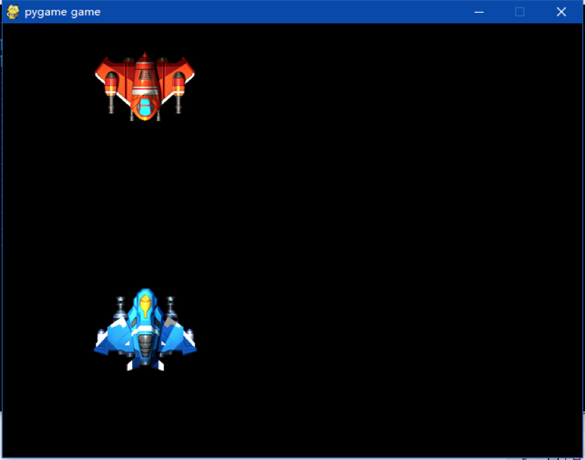
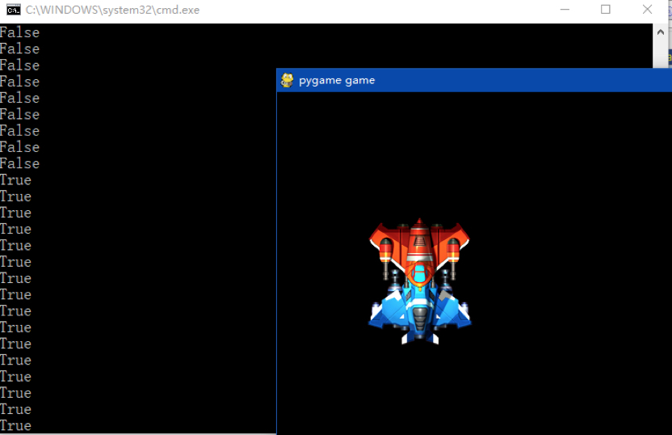

- 00 开篇词 跟我学，你也可以开发一款游戏！.md
- 复习课 带你梳理客户端开发的三个重点.md
- 第10讲 如何载入“飞机”和“敌人”？.md
- 第11讲 如何设置图像的前后遮挡？.md
- 第12讲 如何设置精灵的变形、放大和缩小？.md
- 第13讲 如何设置淡入淡出和碰撞检测？.md
- 第14讲 如何制作游戏资源包和保存机制？.md
- 第15讲 如何载入背景音乐和音效？.md
- 第16讲 如何在游戏中载入UI和菜单？.md
- 第17讲 如何用鼠标和键盘来操作游戏？.md
- 第18讲 如何判断客户端的网络连接？.md
- 第19讲 如何嵌入脚本语言？.md
- 第1讲 游戏开发需要了解哪些背景知识？.md
- 第20讲 脚本语言在游戏开发中有哪些应用？.md
- 第21讲 如何使用脚本语言编写周边工具？.md
- 第22讲 如何选择合适的开发语言？.md
- 第23讲 如何定制合适的开发协议？.md
- 第24讲 不可忽视的多线程及并发问题.md
- 第25讲 如何判断心跳包是否离线？.md
- 第26讲 如何用网关服务器进行负载均衡？.md
- 第27讲 如何制作游戏内容保存和缓存处理？.md
- 第28讲 热点剖析（一）：HTML5技术是如何取代Flash的？.md
- 第29讲 热点剖析（二）：如何选择一款HTML5引擎？.md
- 第2讲 2D游戏和3D游戏有什么区别？.md
- 第30讲 热点剖析（三）：试试看，你也可以编写一款HTML5小游戏！.md
- 第31讲 热点剖析（四）：安卓端和苹果端游戏开发有什么区别？.md
- 第32讲 热点剖析（五）：如何选择移动端的游戏引擎？.md
- 第33讲 热点剖析（六）：AR和人工智能在游戏领域有哪些应用？.md
- 第34讲 热点剖析（七）：谈谈微信小游戏的成功点.md
- 第35讲 热点剖析（八）：谈谈移动游戏的未来发展.md
- 第36讲 热点剖析（九）：谈谈独立开发者的未来发展.md
- 第3讲 游戏的发动机：游戏引擎.md
- 第4讲 底层绘图接口的妙用.md
- 第5讲 构建游戏场景的武器：地图编辑器.md
- 第6讲 从0开始整理开发流程.md
- 第7讲 如何建立一个Windows窗体？.md
- 第8讲 如何区分图形和图像？.md
- 第9讲 如何绘制游戏背景？.md
- 结束语 做游戏的过程就像是在雕琢一件艺术品.md
- 课后阅读 游戏开发工程师学习路径（上）.md
- 课后阅读 游戏开发工程师学习路径（下）.md
第13讲 如何设置淡入淡出和碰撞检测？
我们在前一节，学习了精灵的变形、放大和缩小，并且学习了如何使用精灵类和组的概念来管理精灵，制成动画。今天，我将带你学习淡入淡出和碰撞热点的判断。
所谓的淡入淡出，就是英文的fade-in和fade-out。淡入淡出在电影、游戏、CG、操作系统、手机UI、应用等等各种地方随处可见。那究竟什么是淡入淡出呢？它在游戏中究竟如何实现呢？在我们的打飞机游戏中，什么时候会用到这个操作呢？
什么是淡入淡出？
不知道你有没有注意，在我们玩过的打飞机游戏中，当每一关游戏开始的时候，都会有个游戏画面逐渐出现的过程。短短几秒，从无到有，整个画面就呈现在你眼前了。同样，每一关结束的时候，也会有个画面逐渐消失的过程。
从画面效果讲，这个画面从有到逐渐屏幕变暗，直到消失，或者反过来，由暗逐渐变亮，到完全进入画面的过程，就叫做淡入淡出。从声音角度讲，也存在淡入淡出，比如音乐从无声到逐渐有声，或者从有声到逐渐无声。
在Pygame中并不存在“画面的淡入淡出”这样的函数，需要我们自己去实现这样的功能。
首先，如果我们想给这张图片进行淡入淡出的处理的话，就需要对它进行alpha混合处理。我们在前面谈到过alpha混合，你可以理解成半透明，但是alpha混合究竟是什么呢？
alpha混合就是将一部分被遮盖的图像进行半透明处理。在游戏引擎或者游戏库中，图像的alpha值是可以被修改的。每动态修改一次alpha值，就会让图像更透明或者更不透明。通过制作出alpha效果，我们可以在游戏中实现各种绚丽的效果。
一般来讲，底层图形接口的颜色为32位的值，包含RGB以及A（alpha），其中红色R、绿色G和蓝色B各为8位，alpha也为8位，所以合起来是32位的颜色值。
但是如果不存在A通道，那么就是24位的颜色值。每个颜色值都有256个级别的值，从程序角度是从0到255，而支持alpha通道的图片格式有png、tiff等。但是如果没有带alpha透明通道的图，我们也可以在程序中设置它的alpha值来做透明。
如果是Pygame，在load image函数的时候，不要处理alpha，也就是不要调用convert_alpha函数。具体为什么呢？我后面给你揭晓。
如何做出淡入淡出效果？
我们在没有背景图片载入的时候，做淡入淡出效果，就不是使用alpha通道了，而是需要用fill函数来填充背景色。
如果背景色是（0,0,0），也就是纯黑的话，那么就需要将（0,0,0）逐渐变成（255,255,255）来变成纯白，或者你自己定义一个RGB值来完成最终淡出后的背景色。
我们现在来看一下这段代码。
pln = pygame.image.load(plane).convert()
a=0
while True：
pln.set_alpha(a)
screen.blit(pln, (20, 150))
if a > 255:
a=0
screen.fill([a,a,a])
a += 1
这段代码中，我们开始载入飞机图片。注意一下，我们没有用convert_alpha。如果我们用了convert_alpha，就会出现设置的alpha值没有任何作用。因为，在载入的时候，已经处理了alpha值了。
随后，我们定义一个变量a，这个a既作用在screen.fill上，将fill的RGB值进行变换，也作用在set_alpha这个函数里，这个函数将图片的surface进行alpha值的设置，最后blit出来，呈现在屏幕上。
我们呈现的效果就是这样。

其他图片也可以做alpha混合，我们将最早的背景jpg图片传入，进行alpha半透明调整，效果是这样的。

如何设置碰撞检测？
说完了alpha混合，我们现在要来学习一下碰撞相关的内容。这个很好理解，飞机相撞了，就要用到碰撞。
事实上，在游戏中，碰撞属于物理引擎的一部分。特别是在3D游戏当中，物理引擎是独立于图形引擎的一个模块。程序员需要将图形引擎的对象填入到物理引擎中，计算出碰撞的结果，然后再返回给图形引擎，给出画面效果。做得精致的2D游戏也有独立的物理引擎，专门检测碰撞、计算重力等等。
但是在今天我们的课程中，我将使用浅显易懂，用你最能看懂的代码来解释碰撞是怎么回事。
事实上，我们今天要讲到的碰撞是两个图片相交之间的碰撞检测，这并不算物理检测，而是图片检测。
既然我们要检测的是图片，那么哪些前置信息是我们需要知道的呢？
首先，我们肯定要知道这两张需要碰撞图片的长宽，才能计算图片是否相交。在计算图片相交的时候，我们首先要知道它所在位置的x轴的起点，然后要知道它的图片宽度，然后我们要知道图片位置的y起点，以及它的图片长度，这样我们就得到了图片的长宽。
我们用上面的主角飞机图片和敌人飞机图片来做演示。

让两架飞机面对面，敌人的飞机从上往下飞，主角飞机从下往上飞。如果两架飞机碰到，我将在后台的命令行窗口显示一些字符串。
定义碰撞函数
接下来，我们来看一下，如何定义这个碰撞函数。
def collide(a, axy, b, bxy):
a_x1, a_x2 = axy[0], axy[0]+a.get_width()
a_y1, a_y2 = axy[1], axy[1]+a.get_height()
b_x1, b_x2 = bxy[0], bxy[0]+b.get_width()
b_y1, b_y2 = bxy[1], bxy[1]+b.get_height()
a1, a2 = range(a_x1, a_x2) , range(a_y1, a_y2)
b1, b2 = range(b_x1, b_x2) , range(b_y1, b_y2)
ct = 0
for a in a1:
if a in b1:
ct = 1
break
for a in a2:
if a in b2:
if ct == 1:
return True
return False
我们来仔细地看一下这段函数。
首先，collide函数拥有四个参数。第一个参数是第一幅图片的对象，第二个参数接收一个元组，接收第一幅图片所在的x轴和y轴，第三个参数是第二幅图片的对象，第四个参数接收一个元组，接收第二幅图片所在的x轴和y轴。
随后，代码进入一个得到长宽的过程。
a_x1获取a图片对象所在屏幕的x点的起始位置，这个位置由第二个参数的元组下标0提供，a_x2获取a图片对象所在屏幕的x点的终止位置（事实上是它的宽度），由于有x轴的起始坐标的关系，所以需要起始坐标加上图片宽度，才是它真实的x坐标结束点。
a_y2获取a图片对象所在屏幕的y点的起始位置，这个由第二个参数的元组下标1提供，a_y2获取a图片对象所在屏幕y点的终止位置，其实是它的长度，和前面的x轴一样，需要加上y轴所在屏幕的位置，才是真正的y轴的结束点。
和a图片是一个道理，b图片我就不作具体阐述了。
接下来，我们需要知道整个图片所在的屏幕点，那么我们就需要用到range函数。
Python的range函数，是自动形成的一串整数列表。它的函数原型是这样的。
range(start, stop, [step])
其中步长step可以省略。因为默认是1，所以如果在range中输入了开始和结束，就会形成一个列表。如果省略了stop，就会从0开始计数，形成一串列表。比如range(5)，那就会形成0，1，2，3，4。
我们在range中形成了一串列表，其中a1对应的是，a图片x值的起始点到终止点的列表，a2对应的是a图片y值的起始点到终止点的列表。接下来的b1和b2就不做阐述了，和a1是相同的代码逻辑。
碰撞的检测
随后，我们就需要进行碰撞的检测了。
首先，我们先要判断a图片x轴的列表数字里面，是不是存在b图片的x轴的数字。如果存在，那么就把计数加1，跳出循环。
接下来，我们再判断a图片的y轴的列表数字里面，是不是存在b图片的y轴的数字。如果存在，那么就返回为真（True），就说明碰撞检测成功了。如果计数等于0或者计数等于1但是并没有通过y轴的列表检测，那么就返回假（False）。
我们来看一下传入参数的代码。
y1, y2 = 1, 1
screen.blit(pln, (100, 300 + y1))
screen.blit(enm, (100, 20 + y2))
print collide(pln, (100,300+y1), enm, (100,20+y2))
y1-=1
y2+=1
我们在blit绘制的时候，y轴加入了一个变量，就是y1和y2。其中主角的飞机pln对象，y轴始终减1，敌人的飞机enm，始终加1，为的就是让两架飞机对向飞过来并且检测碰撞。
我们将pln和 enm以及它们所在的位置，分别传入collide函数，进行检测。我们将在命令行后台打印True或者False。如果是False就是没有碰撞，如果是True就是碰撞了。

当两架飞机碰到的时候，True就出现了，那是因为x轴和y轴都有不同程度的重叠。所以在collide函数里面，就返回了True。
另外，在Pygame里，精灵类当中也有碰撞检测的类可以提供使用，但是，使用碰撞检测类可以用来进行球形的判断，而不能用于矩形图片之间的判断。 这是更为高级和复杂的用法，在这里不做更深的阐述了。
小结
今天，我和你讲解了淡入淡出以及碰撞的热点检测。我们需要设置Alpha混合和背景填充，来实现淡入淡出，而普通图像碰撞的检测，则是通过判断图像x轴和y轴是否重叠来实现。
给你留个小问题吧。
如果给你一张图片，需要判断精准的碰撞，比如碰到机翼，或者碰到某一个非矩形的位置，你该如何判断碰撞结果？
欢迎留言说出你的看法。我在下一节的挑战中等你！
© 2019 - 2023 Liangliang Lee. Powered by gin and hexo-theme-book.